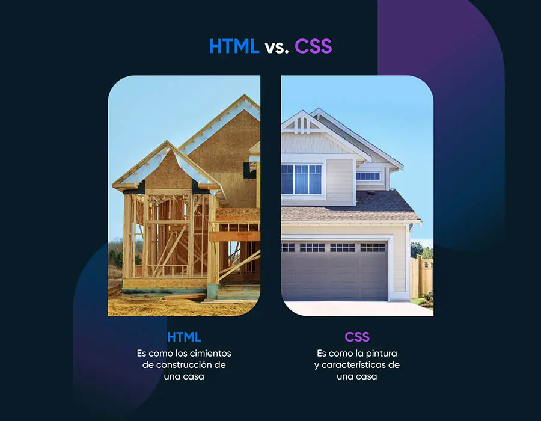

Definición de CSS
En las primeras versiones de HTML, teníamos combinado en nuestras páginas (documentos) toda la parte de
estructura(HTML) con lo que llamábamos apariencia ("ahora vamos a llamar CSS").
Actualmente esta metodologías ya no se aplica, sino que por norma general, lo que tenemos es por un lado
la estructura separada (es decir, HTML sin apariencia) y por otro lado, tenemos lo que es el diseño y/o formato
con la apariencia que queremos aplicar a nuestras páginas web, es decir, el CSS.
CSS, se puede definir como Cascading StyleSheet, es decir, Hojas de Estilo en Cascada.
NO ES UN LENGUAJE DE PROGRAMACIÓN, SINO ES UN LENGUAJE DE TEXTO PLANO CON EL CUAL PODEMOS APLICAR ESTILOS A NUESTRAS WEBS.
Por lo tanto, podemos establecer que:
- HTML: sirve para dar estructura a nuestra web. Es decir, indicar qué es lo que queremos que tenga mi página web.
Ejemplo: una imagen, un formulario, un vídeo, tablas, etc.
- CSS: sirve para decir cómo queremos que sean esas estructuras de mi página web.
Por ejemplo: una imagen centrada con un borde de color rosa, un color de fondo azul, un tamaño de letra
de 34px, una tipografía Arial...

Funcionamiento de CSS
El funcionamiento de CSS, es el siguiente:
- En el archivo html (archivo.html) se escriben siempre las etiquetas de la estructura de nuestra web
- En el archivo css (archivo.css) se escribe cómo queremos que sea nuestra web. --> APARIENCIA (ESTÉTICA)
- La combinación de ambas, hace que nuestra página web tenga una estructura completa: HTML + CSS = Web Actual
A parte de esto, tenemos que tener en cuenta las siguientes características:
- Las hojas de estilo en cascada (CSS), son complementarias a las etiquetas HTML.
- Los archivos o estilos CSS, sirven para separar estructura de apariencia
- Evitar el excesivo uso de tablas para la maquetación web...
- Es un tipo de sistema que es compatible prácticamente hoy en día con todos los navegadores web, y que se
aplica en la prog. web, desde la versión HTML 4.1
- CSS, permite el poder aplicar una única hoja de estilos, a varias pagínas HTML de un mismo o de un distinto proyecto.
Que actualmente existen tres versiones de CSS, en donde la más actual y la que se está utilizando a fecha de hoy es CSS3.
Ventajas de CSS
- Mayor control de la presentación de sitios web
- Si necesitamos modificar un elemento HTML o de CSS, al estar separados, este trabajo resulta mucho más
sencillo de lo que resultaba antes puesto que tenemos separado Estructura de Apariencia.
- Mayor legilibilidad --> más fácil de interpretar y entender
- Se reduce duplicidad de estilos. Es decir, podemos tener un único CSS o estilo que se aplique a varias
etiquetas o estructuras HTML. Esto nos permite, que a la hora de cargar la página web, vaya todo
mucho más fluido y rápido.
- Es más fácil de crear páginas web adaptadas a distintos dispositivos multimedia: tablets, smartphone, PCs, etc.
Desventajas de CSS
- A vece dependiendo del navegador, se puede ver de una manera u otra, y además, no todas los estilos CSS
son compatibles con todos los navegadores.
- El uso de las tablas anteriormente nos ayudaba a tener todo mucho más organizado de una manera muy fácil y
y sencillo, y ahora con CSS, nos tenemos que "pegar" para poder "cuadrar" y maquetar ciertos elementos
de nuestras webs...
Funcionamiento de CSS con HTML
El funcionamiento de CSS con HTML, se puede realizar/establecer de tres formas distintas:
- CSS Externo: Se caracteríza por ser un documento con extensión .css, en el cual tendremos
todas las características de CSS que queremos aplicar en nuestro HTML.
Para vincular un CSS Externo con un HTML, tendremos que utilizar la etiqueta link rel="stylesheet"
href = "nombre_documentoCSS.css"
Todo esto irá insertado en el head del documento HTML.
- CSS Interno: Es el CSS que irá incrustrado en el head del HTML, pero mediante las etiquetas
de apertura y cierre style.
- CSS Embebido o Inline: consiste en aplicar el CSS mediante el atributo style directamente en
la etiqueta HTML que se desee.